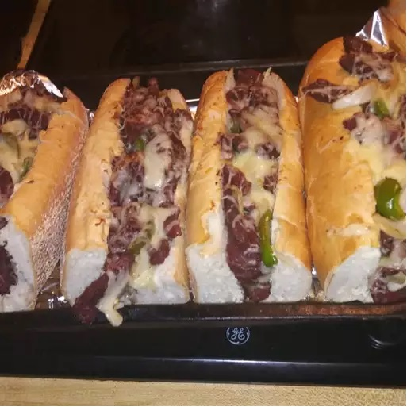

Philly Cheesteak

Description
Philly Cheesesteak is a sandwich made with super thinly sliced ribeye steak, caramelized onion, and provolone
cheese. That simple combination is the original classic as made popular on the East Coast.
Ingredients
- 1/2 teaspoon salt
- 1/2 teaspoon black pepper
- 1/2 teaspoon paprika
- 1/2 teaspoon chili powder
- 1/2 teaspoon onion powder
- 1/2 teaspoon garlic powder
- 1/2 teaspoon dried thyme
- 1/2 teaspoon dried marjoram
- 1/2 teaspon dried basil
- 1 pound beef sirloin, cut into thin 2 inch strips
- 3 tablespoons vegetable oil
- 1 onion, sliced
- 1 green bell pepper, julienned
- 3 ounces Swiss cheese, thinly sliced
- 4 hoagie rolls, split lengthwise
Directions
- Mix together salt, pepper, paprika, chili powder, onion powder, garlic powder, thyme, marjoram, and basil in
a small bowl.
- Place beef in a large bowl. Sprinkle seasoning mixture over top and stir to coat.
- Heat 1/2 of the oil in a skillet over medium-high heat. Add beef and saute to the desired doneness. Remove
to a plate.
- Heat the remaining oil in the skillet. Add onion and green pepper and saute until tender.
- Preheat the oven on the broiler setting.
- Divide cooked beef between the bottoms of 4 rolls. Layer with onion and green pepper, then top with sliced
cheese. Place on a cookie sheet.
- Broil in the preheated oven until cheese is melted.
- Cover with tops of rolls and serve.